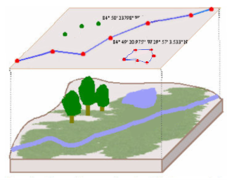
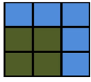
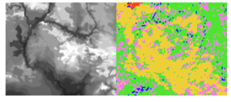

Data & File Types
1 Data types
In coding environments and other software, data are classified into specific “types”, which determine how the values are interpreted and stored in memory. Recognizing the data types of variables in a dataset is essential for ensuring analytical accuracy, understanding precision, and avoiding errors during data processing.
1.1 General data types
| Data type | Definition | Typical memory | Precision | Common operations | Examples |
|---|---|---|---|---|---|
| Character (string/text) | text or string values | ~1 byte per character | Not applicable (stores characters, not numeric values) | Concatenation, substring, pattern matching | "Hello, world!",'#23',"'Why?', they asked." |
| Integer | Whole numbers (no decimal point) | 4 bytes (32-bit) | Exact for values within allowed range | Arithemtic, comparisons, indexing | 0, 42, -6,2e+30 |
| Floating point | Numbers with decimals (real numbers, including fractions) | 4 bytes (float), 8 bytes (double) | Approximate - may introduce small rounding errors | Arithmetic, scientific calculations | -54.3,3.14159 |
| Boolean / Logical | Binary values | Typically 1 byte | Exact | Logical operations (e.g., AND, OR, NOT) |
TRUE, FALSE,0, 1 |
| Date/time | Calendar dates and/or clock times | Varies by system (~8+ bytes) | High precision in supported range | Often require specialized functions; format inconsistencies can cause import errors | 2025-05-29, 1990-01-24 14:30:00 |
1.2 Notes and considerations
Floating point rounding errors Floating point types represent real numbers, including fractions. However, not all decimal values can be represented exactly in binary. As a result, small rounding errors may occur during arithmetic operations. These are usually minor but can accumulate in complex calculations. Example:
0.1 + 0.2might result in0.30000000000000004due to binary representation limits.Date formats
- Use the conventional ISO 8601 format (
YYYY-MM-DD) - Ensure that date formats are consistent within columns and are correctly interpreted when converting to a standard format. For example, if a date is formatted as
DD/MM/YYYYbut is mistakenly interpreted asMM/DD/YYYYduring conversion toYYYY-MM-DD, the resulting date will be incorrect.
- Use the conventional ISO 8601 format (
Changing data types Changing a variable’s data type (e.g., from float to integer or from number to string) can alter how the data is stored and interpreted. Even if the displayed values seem the same (e.g.,
5,5.0, or"5"), the underlying representation differs—and in some cases (like converting from float to integer), it may result in loss of precision or information. Always check whether a conversion is appropriate for your analysis.float_value = 3.7 int_value = int(float_value) # Becomes 3Memory efficiency Choosing efficient data types can improve performance for large datasets. For example, storing whole numbers (like counts of people) as double-precision floats instead of integers can use more memory than necessary. While both floats and integers can be 4 or 8 bytes depending on the system, using types with more precision than needed (e.g., doubles for integers) can lead to unnecessary memory overhead.
2 Data file formats
In general, data should be stored and/or archived in open formats. Open formats are non-proprietary, and therefore maximize accessibility because they have freely available specifications and generally do not require proprietary software to open them. The best file format to use will depend on the type and structure of data. The section on data formats from the Standard Operating Procedures of emLab (at UC Santa Barbara) gives a few examples.
2.1 Key characteristics of data file formats
Proprietary vs. non-proprietary: Non-proprietary software formats can be easily imported and accessed using open-source software. This enhances their interoperability, or how easily a file format can be used across different software platforms and systems. Formats that are widely supported and compatible with various tools are generally more versatile.
Tabular vs. hierarchical: Tabular data is organized into rows and columns, resembling a table, while hierarchical data is organized in a tree-like structure, with elements nested within others.
Structured vs. unstructured: Structured data refers to data that is organized in a predefined format, typically in rows and columns, like databases or spreadsheets, which allows for easy search, analysis, and processing. Unstructured data, on the other hand, lacks a predefined format and is often textual or multimedia in nature, such as emails, social media posts, or video files. Semi-structured data has tags or markers but not a rigid structure.
Retention of data types: Some file formats retain metadata about data types (e.g., whether a column is an integer or string), while others lose this information upon saving.
2.2 Tabular formats
Use open-source formats whenever possible.Plain text formats like CSV (.csv) are preferred for their transparency, interoperability, and long-term accessibility. Excel (.xlsx) and Stata (.dta) are proprietary and should generally be avoided—except when essential features (like Stata variable labels) are required.
Choosing an open source format.The preferred open source format will depend on the project team’s preferences for accessibility, software, interoperability, need for computational efficiency, etc. The features of common formats are described below.
In cases where the native format of source data is in a proprietary software format, it is often necessary to use that software to view and edit data. For example, Stata dataset variables may have labels, a kind of embedded metadata that can only be accessed in Stata.
Characteristics of tabular formats
| Format | Extensions | Open-source or proprietary | Retains data types | Level of structure |
|---|---|---|---|---|
| Comma or tab-separated values | .csv, .tsv | Open-source | No | Structured |
| Plain text | .txt | Open-source | No | Semi-structured |
| Microsoft Excel spreadsheet/workbook | .xls or .xlsx | Proprietary | Yes | Structured |
| Feather | .feather | Open-source | Yes | Structured |
| Parquet | .parquet | Open-source | Yes | Structured |
| RData | .rdata or .rds | Open-source | Yes | Structured |
| Lightning Fast Serialization of Data Frames | .fst | Open-source | Yes | Structured |
| SQLite | .sqlite, .db | Open-source | Yes | Structured |
| Stata data file | .dta | Proprietary | Yes | Structured |
| SAS dataset | .sas7bdat | Proprietary | Yes | Structured |
| Database File | .dbf | Open-source | Yes | Structured |
Descriptions of tabular formats
Text-based formats These formats are highly accessible and can be opened with common tools like Excel, Notepad, or any text editor, making them ideal for sharing output/final datasets. Text-based formats also work well with version control systems. However, be aware of their drawbacks and follow best practices.
Comma-separated values (.csv) delimited text files widely used for data exchange and simple data storage. Each row contains the same number of values separated by commas.
Tab-separated values (.tsv) files similar to CSV files but with values separated by tabs.
Plain text (.txt) files which can contain unformatted or formatted (schema) text. Not recommended for storing complex datasets.
Excel spreadsheets/workbooks (.xls, .xlsx) are files designed for use with Microsoft Excel software. XLS is a binary file format compatible only with Excel, both older and newer versions. XLSX was developed more recently. It is XML-based, making it compatible with open-source software such Google Sheets as well as versions of Excel released since 2007. Generally avoid relying on these files for data storage due to complex formatting, data formats, formulas, etc. They also complicate quality assurance. XLS is not version-control friendly and XLSX requires special version-control techniques because it is stored in a compressed state. Excel spreadsheets can easily be exported to CSV files.
Common data science formats These formats are well suited for working with data during analysis and collaboration (e.g., intermediate data), because they retain metadata (e.g., data types) and are optimized for reading and writing. They are more computationally efficient in terms of input/output speed and file size, but often less suited to version control than text-based formats.
Feather (.feather) a fast, lightweight binary columnar data format used for data exchange between data analysis languages like R and Python. Optimized for performance and efficiency, especially when working with large tables of data. Faster than Parquet at in-memory work, reading, and writing.
Parquet (.parquet) a binary columnar data format designed for efficient storage and processing of large datasets. Supports compression and is optimized for performance across data tools like R, Python, and SQL engines. Better file size efficiency than Feather.
RData (.rds, .rdata) files used to store one R object (
.rds) or an R environment with several objects (.rdata). Useful if working within an R project for efficiency and organization features, but providing limited interoperability.Lightning Fast Serialization of Data Frames (.fst) a fast, compressed, columnar binary format designed specifically for R, optimized for high-speed reading and writing of large data frames. Ideal for efficient storage and selective column access in R workflows, but not designed for cross-language interoperability.
SQLite (.sqlite, .db) files used by the SQLite relational database engine, which supports SQL queries and transactions and is used for lightweight, portable databases.
Stata data file (.dta) binary files created by the statistical analysis software Stata. Note that they sometimes include metadata (e.g., variable labels) that isn’t automatically loaded when importing into other software (e.g. R using the haven package).
SAS Dataset (.sas7bdat) the proprietary file format used by SAS for storing datasets. It supports metadata and variable attributes. Datasets should be converted to open-source formats after processing.
Database File (.dbf) files used by dBASE and other database systems to store tabular data. They support a fixed schema and metadata. DBF files cannot store full precision. Avoid creating this type of file.
Working with text-based file formats
Limitations of text-based formats
Text-based formats like CSVs do not store data type metadata.
Be cautious when reading and writing CSVs or other plain-text formats. Understand that data types will be inferred, not preserved, and this may introduce rounding or formatting errors. All values are saved as character strings in text-based file formats — there is no embedded information about whether something is an integer, float, etc.
This has several implications:
- Type guessing on import When reading a CSV, software tools typically infer column types automatically. This can result in:
- Inconsistent interpretation across tools (e.g., a column read as numeric in one program might be read as text in another).
- Conversion errors, especially with dates, floating points, or missing values.
- Precision loss on export If you’re exporting a floating point column to CSV, the software may:
- Round or truncate values.
- Drop trailing digits or use limited decimal precision.
- These changes might not be obvious but can affect downstream calculations.
- No built-in support for special types Since all values are strings, CSV files cannot inherently distinguish between:
3as an integer vs.3.0as a float2023-01-01as a string vs. a date objectTRUEas a logical value vs. a text label
Practices for working with text-based formats
- Reading/importing text-based data
- Explicitly specify column types when importing data (e.g., using
read_csv(..., col_types=...)inRordtype=...inpython pandas). Another strategy is to specify all column types as character (col_types = 'character), view how they are stored, and then decides which columns to convert and how. - Validate types after import, either by manually inspecting or using scripted tests.
- Explicitly specify column types when importing data (e.g., using
- Exporting/sharing text-based data
- Use text-based formats only when useful, such as when publishing / sharing data with those without specialized software, or when version-controlling data.
- Use formats that preserve numeric precision (e.g., binary formats like
.rds,.feather,.parquet) during analysis. - Clearly document data types in metadata or a readme when sharing text-based formats.
2.3 Hierarchical formats
Hierarchical data formats are best suited for storing and exchanging complex, nested data structures with parent-child relationships, such as configurations, scientific datasets, or web APIs, where flexibility and the ability to represent variable levels of detail are essential.
Characteristics of hierarchical formats
| Format | Extensions | Open-source or proprietary | Retains data types | Level of structure |
|---|---|---|---|---|
| Hierarchical Data Format version 5 (HDF5) | .h5, .hdf5 | Open-source | Yes | Structured |
| Network Common Data Form (NetCDF) | .nc | Open-source | Yes | Structured |
| JavaScript Object Notation | .json | Open-source | No | Semi-structured |
| eXtensible Markup Language | .xml | Open-source | No | Semi-structured |
| YAML | .yml or .yaml | Open-source | No | Unstructured |
Descriptions of hierarchical formats:
Hierarchical Data Format version 5 (.hdf5, .h5), commonly called HDF5, files for storing complex and hierarchical datasets, supporting large data volumes and complex data structures.
Network Common Data Form (.nc), commonly called NetCDF, files designed for array-oriented scientific data. They work especially well for multi-dimensional data like time-series and spatial data.
JavaScript Object Notation (.json), text-based files used for storing structured data. Often used to transfer data between a server and a web application, as well as when sending and receiving data via an API.
eXtensible Markup Language (.xml), files organizing data hierarchically with customizable tags, making them both machine-readable and human-readable. XML is widely used in web services, data exchange, and configuration files.
YAML (.yaml or .yml), human-readable files using a data serialization format well suited for configuration files and data exchange. It uses indentation to define structure and supports key-value pairs, lists, and nested data, making it simpler and more concise compared to XML or JSON. “YAML” is a recursive acronym: YAML Ain’t Markup Language.
2.4 Geospatial file formats
Geospatial data are stored as either vector data or raster data. The format of input spatial data typically dictates which geospatial tools can be applied to it.
Vector data

Vector data is stored as pairs of coordinates. Points, lines, and polygons are all vector data.
Recommended open-source vector file formats:
- Geopackage (.gpkg, recommended for its advantages over the shapefile format)
- Keyhole markup language (e.g.,
.kml,.kmz) - GeoJSON (e.g.,
.json,.geojson) - Tables with coordinates (e.g.,
.csv)
Common proprietary vector file formats:
- Shapefiles (.shp)
- Feature classes in geodatabases (.gdb)
A shapefile is actually a collection of several files, including geometry (.shp), projection information (.prj), tabular data (.dbf), and more. Make sure to store all component files together within the same folder.
All vector data files should have three critical metadata components:
- Coordinate reference system
- Extent: the geographic area covered by the data, represented by four coordinate pairs
- Object type: whether the data consists of points, lines, or polygons
Raster data
 
Raster data formats store values across a regular grid containing cells of equal size, with each cell containing a value. A raster is similar to a pixelated image, except that it’s accompanied by information linking it to a particular geographic location. All cell values within a single raster variable are of the same scalar data type (integer, float, string, etc.). Common examples of raster data are elevation, land cover, and satellite imagery.
The recommended general purpose raster file format is GeoTIFF (.tif), as it supports multiple bands, retention of spatial reference metadata, large file sizes, high compression, and use in a variety of languages/software. Other formats may work better for specific use cases. All of the following common formats are open-source:
- GeoTIFF (.tif), the most widely used format for raster data
- ASCII grid (.asc), plain-text-based files for elevation models and basic raster grids
- NetCDF (.nc) and HDF5 (.hdf5, .h5), both described in Section 2.3
Avoid saving rasters as proprietary software file formats, including ESRI grid/tile and ERDAS Imagine (.img) files.
All raster files should have five critical metadata components:
- Coordinate reference system
- Extent: how large the raster is, often represented by the number of rows and columns
- Origin point: a pair of coordinates pinpointing the bottom left corner of the image
- Resolution: cell size
- No data value: the value that represents when a cell’s data value is missing
3 Figure file formats
It is helpful to think ahead when generating and saving data visualizations and plots. Academic journals often accept TIFF and PNG formats, but they frequently have resolution and dimension requirements. Export figures with a minimum resolution of 300 dots per inch (DPI).
For RFF communications, however, vector formats are best because they can be easily modified as needed. These include:
- Scalable Vector Graphics (
.svg) - Encapsulated PostScript (
.eps)
Consider that you may want to be able to share the underlying data with the RFF Communications team so that they and their external design partners can create custom figures for presentation on the website, in the magazine, etc. This means clearly documenting the processing code that created the underlying data / figures, so that output data can be easily reproduced and shared as needed. If figure data is time-consuming to reproduce, you may want to save a copy of it to the L:/ drive or to your GitHub repository.
For more information on figure (and table) style guidelines, refer to the RFF Style Guide.
“Sharing the underlying data of any maps and figures is always helpful for the Communications Team!”
– Elizabeth Wason (Editorial Director, RFF)
4 Resources
- R-focused:
- Python-focused:
- Spatial data types